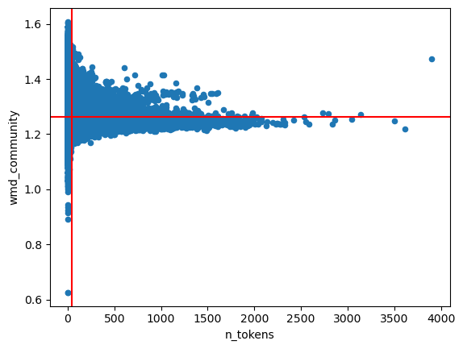
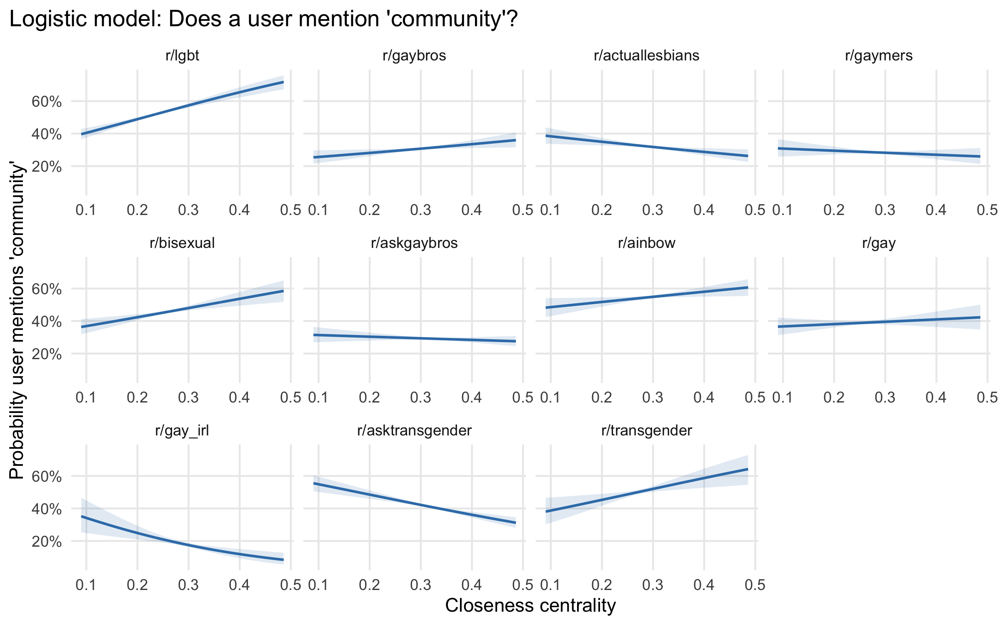
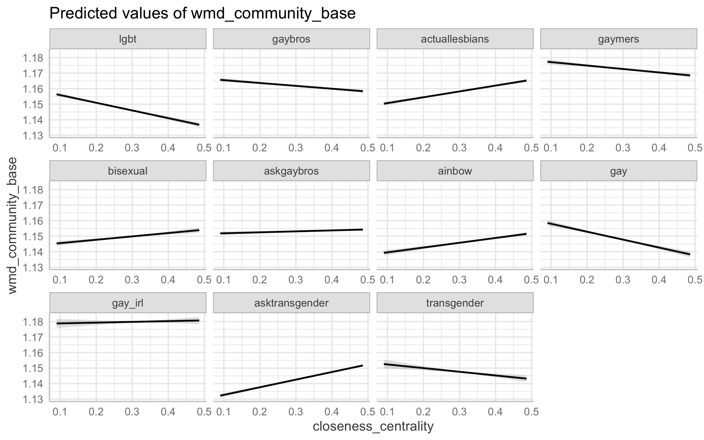

4 Community talk
Interactional contexts and consequences
Building on everyone’s comments and Mako’s offer of data, I’ll use Reddit, not Twitter, as the starting point for Chapter 3. I really liked the point about thinking about group-level outcomes, though I definitely want to think more about measurable interaction-level outcomes (even if that’s just, as someone mentioned, sustained conversation). I’ll need to think about the comparative logic of case more – especially the intersections of place, identity, and activities/interests. I can think of a few example papers using different kinds of subredddits that I might draw on.
4.1 Proposal version
4.1.1 Short version
Chapter 1 shows that when actual people talk about community they often actually mean something very similar to the sociological concept of Gemeinschaft; chapter 2 explores the conditions under which people experience a sense of community in relation to an identity category. All of this provides evidence of the reality and salience of this sociological thing called “community” for LGBTQ people. But what happens when LGBTQ people seek community out, and express community in the process? I engage with this question in Chapter 3, by using LGBTQ virtual communities to ask who produces community talk, and what happens when they do?
This chapter will make use of the direct measures of expressions of the social and cultural aspects of community developed in Chapter 1. This will be critical because, as chapter 2 is likely to show, for LGBTQ people, feeling connected to a community is not simply about conformity or sameness. I have chosen to develop my own measure to account for this, rather than reuse existing computational linguistic measures of belonging (Lucy and Bamman 2021), which equate belonging with conformity.
As in Chapter 2, a primary question is whether pro-community factors reinforce each other, or whether community becomes ambient and backgrounded once it has been created. In this chapter, the question is whether community talk is most prevalent among those who are most embedded or central in a group, perhaps performatively creating community for downstream and peripheral group members; or, is it the peripheral members of a group that engage in the most community talk in an effort to create their own sense of belonging? Those are two distinct possibilities for the sources and the potential impacts of expressions of community.
The ideal virtual community for studying community talk would have both network and interaction measures, the contents of conversations, and their eventual outcomes. I don’t think perfect data are attainable; instead, different platforms have different downsides.
Based on initial feedback, I think Twitter comes closest to most of these measures. The problem, of course, is that “gay twitter” doesn’t have clear, defined community boundaries. My main idea is to use an identity symbol as a proxy for community membership and a window into the network. (Alternatives like pride hashtags might be worth exploring but seem overly inclusive.)
The fallback plan here is Reddit, which lends itself to a slightly different set of questions; Reddit conveys less information about the embeddedness of individuals in networks of people, but rather in networks of groups. (It has the countervailing advantage that some LGBTQ-oriented groups on Reddit are broader and some are more specialized.)
4.1.2 Long version
Ultimately, “community” is something that people do – they build community, they create it. This chapter aims to study how the process of creating and invoking community plays out in social networks and social interactions. Social density of interactions and relations, not mere physical proximity, produces the social reality and the individual subjective experience of community, as well as observable expressions of the same.1 But then in turn expressions of community help create the conditions for group-based social life. Building on the discursive analysis from chapter 1, and selecting a complementary context compared to the place-based analysis from chapter 2, I aim to use virtual communities as a site to study the relation between social density and expressions of community. However, the contemporary digital platforms that provide spaces for virtual communities are vast and varied, and I need help developing and crystalizing a concrete project that connects digital data sources to some facet of the underlying theoretical process. In this chapter proposal, I’ll lay out a few possibilities and articulate their tradeoffs.
The expression of community I plan to focus on is linguistic or textual, the kind of community talk or vocabulary of belonging that I explored in chapter 1. This could be explicit invocations of community and belonging that keyword methods can surface, or broader language that more generally resonates with those concepts, of the kind that embeddings models can uncover (Stoltz and Taylor 2021). Text is key partly for measurement and analysis reasons; while image, voice, and video data are all also important aspects of the online social experiences that can create or sustain communities, the computational toolkit for using those types of data are less robust and more challenging to apply. In addition to the methodological motivation, there are also important theoretical reasons to focus on text and language, especially in the context of virtual communities that produce informal written language (McCulloch 2019). There are two ways to think about text: as something that matters in itself, or as a proxy for something else. What comes out of people’s mouths (or keyboards) isn’t the same thing as what’s in their heads. While one view might be that community-oriented language is only interesting as a proxy for the sense of community that individuals feel and perceive internally, in this case I’d argue for the importance of language on its own.This is because I think community talk can be performative, not merely expressive; what’s in people’s heads can’t do anything in the social world unless expressed in some way, and those expressions might have consequences regardless of what individuals really feel.2
A couple analytic considerations shape the possible research questions I might pose. First, do I focus on the causes or consequences of community talk? The structural/interactional formation of a community and the expressions of community that emerge from and in turn reinforce that social reality are a reciprocal, self-reinforcing process that unfolds over time.3 Because of that, disentangling cause and consequence might be difficult. If possible, I want this chapter to focus on the consequences of invoking community, but I’m not committed to that direction yet. That focus would complement the work that chapter 1 and chapter 2 aim to do, by stepping through first what community means, then how community happens, and finally what community does. Still, it might be worth considering preceding contexts and downstream outcomes simultaneously if possible, depending on the exact form the data take.
Second, there is the matter of scale. There are two temporal scales or levels to consider when thinking about social density. Social density could be structural and relational, adhering in durable, culturally-recognized ties, like a friendship. Or it could be interactional, ephemeral, and activity-based, like a conversation. In a sense, of course, the latter coalesce into and constitute the former, or the former are an emergent, culturally-perceived (White [1965] 2008) property of the latter. The key analytic question is what each time scale lets me observe. It might be easier to observe the outcome of a conversation than to track the evolution of a friendship; it’s possible to analyze networks dynamically but more likely I’ll get a snapshot of a network than the full temporal dynamic. Interactions often unfold in the context of longstanding ties and/or durable groups, so taking that context into account is warranted regardless of my ultimate focal level of analysis.
With those analytic issues in mind, I’ll sketch out a few potential research questions as possible scenarios, in order to make the possibilities inherent in different data sources more concrete. For instance, on the interactional level of a conversation, how might participants bring in or invoke community, whether implicitly or explicitly? People might be chatting back and forth in an amiable way that steadily builds positive emotional energy (Collins 2004), and that leads to more effusive or expressive community oriented language. Or, community might be invoked in contentious situations (perhaps by a third party), in order to manage contention and steer people toward interactions with more positive emotional energy. In either case, what precedes those moments of heightened community-building? What’s the outcome? Backing out further, to the relational level of a group, who are the people who consistently use high amounts of community-oriented language? Are they the most embedded? Accordingly, is combining network and discursive measures a way of identifying people who structurally and culturally play a key role in a group (Goldberg et al. 2016)? Or, are individuals on the margins the most effusive, to compensate for a lack of structural belonging and performatively create their own sense that they belong? I haven’t committed yet to any one of those questions or the specific hypotheses they might entail; I expect to be able to refine and align at least one of those questions with some digital data source until they correspond well enough to constitute a feasible and interesting project.
Virtual communities provide a key site for observing how community emerge in interaction. Virtual communities are real sites for building community (Baym 1994; Driskell and Lyon 2002; Hampton and Wellman 2003; Rheingold 2000), often intertwined with individuals’ offline lives as a kind of “augmented reality” (Jurgenson 2011; Orne 2017) rather than being completely distinct and separate (i.e., “digital dualism”). Moreover, the interactions that constitute virtual community building often happen through text (McCulloch 2019). By contrast, it’s difficult to collect detailed social density data from offline interactions or ties alone (But not impossible, see Boessen et al. 2014). Another noteworthy aspect of digital spaces is that LGBTQ virtual communities are and have long been highly visible; queer people have been using digital technology to to form connections, to “find” or “build” community with each other, since the virtual communities of the 1990s, like Usenet or the WELL (boyd 2014; Dame-Griff 2019; Rheingold 2000).4
Different digital platforms have distinct structures and affordances, which shape the ways people stage social interactions and the kinds of communities they build. Those affordances also shape the kinds of data I can collect, and ultimately mean I can learn different things from communities on different platforms. In addition, some platforms are better-studied and more convenient to analyze than others; those pragmatic considerations will also shape my case selection and project development. To make the possibilities and tradeoffs clearer, I’ll discuss three platforms in detail: Reddit, Wikipedia, and Twitter. In each case, there are subcommunities of LGBTQ people to study, which have unique features but also reveal something about how each platform operates as a whole.
Reddit provides an obvious option for studying virtual communities, because the entire platform is structured around public groups (called subreddits). In other words, the key affordance of Reddit is the existence of groups in which to participate; these groups are the focal points for almost all interaction, which occurs in threads of posts and comments within subreddits. Posts and comments can be rated and ranked through upvotes and downvotes, providing a crowdsourced measure of quality (Medvedev, Lambiotte, and Delvenne 2018). Direct structural ties between people are deemphasized; analyses of networks of Reddit users instead focus on the web of group affiliations (Olson and Neal 2015; Simmel 1971; Waller and Anderson 2019, 2021) created by ties of subreddit co-membership. In one sense, this group-based structure means that Reddit takes “groupness” for granted – i.e., it can appear to presume the existence of real community rather than showing how strong or cohesive a given community really is. Everyone who participates to any degree could be said to be a “member” of a “community”, which potentially drains those words of any deeper meaning. However, subreddits vary immensely, in size and activity level, but also in moderation efforts, adherence to local rules and norms, and other signals of distinctive group styles and subcultures. Users vary as well, in their levels of participation, how specialized and selective they are in engagement across different groups, and how embedded they are in within-group conversations.
Existing research leverages some of those variations. For instance, Zhang et al. (2017) characterize user engagement across a typology of community-level linguistic features; Lucy and Bamman (2021) use contextual word embeddings to study linguistic variation and conformity and identify semantically unique communities; and Waller and Anderson (2021) study polarization of subreddits through “community embeddings” based on co-membership. In the LGBTQ context, Reddit affords opportunities to observe community-oriented language across both large and generic (e.g. r/lgbt) and small and niche (e.g. r/LesbianGamers/) groups. Based on prior work, there are methods to operationalize individual trajectories, conversation “quality” proxies, and so on.
A second, perhaps less intuitively obvious option is Wikipedia. Wikipedia is a public collective representation of knowledge, but Wikipedia is also virtual community; people can come to have a strong sense of identity as Wikipedians (Pentzold 2011). This is a “peer production” community, rather than a purely social one. But Wikipedia mobilizes and socializes volunteer labor with strong norms and rules – to the point of being bureaucratic – because coordinating the collective production of knowledge is a massive, complicated endeavor (an endeavor the academic community can relate to). On Wikipedia, individual contributors can interact but are not linked by a durable and observable network structure; still, they vary substantially in their overall degree of investment in Wikipedia as a project and community, measurable through time and labor. My primary interest in Wikipedia would be in the backstage interactional work that takes place on the “talk” pages associated with articles, where the outcome of those interactions is the production of public-facing representations. Especially for marginalized identity groups like LGBTQ people, the external stakes of representation are high; moreover, the well-known social biases of Wikipedia in terms of gender, nationality, and so on that emerge from its community of volunteers make clear that this representation is the outcome of a social process (Evans et al. 2020).
For instance, English-language Wikipedia has a “List of LGB people.” I’ve previously mapped the latent structure of the articles on this list, using document embeddings. As the t-SNE projection of these embeddings down into two dimensions reveals, these embeddings fractally map substantive domains (e.g., politics, sports, music), nationalities, and genders – grouping e.g. gay French writers together (Foucault alongside Barthes and Gide and Hocquenghem). Figure 8 shows a thematically labeled version of this map. (An interactive version of the figure which reveals more of its structure is hosted at https://staff.washington.edu/cgilroy/lgb_wikipedia.html). Behind this structure, however, are real people collaborating (and contending) to produce it. They produce different representations with different valences than other Wikipedias in other languages (Park et al. 2020). Other researchers have curated data and produced tools like ConvoKit (Chang et al. 2020) for analyzing Wikipedia conversations; I might leverage and connect those tools to my own methods for surfacing community language and to the ultimate outcomes of the articles resulting from backstage conversations.
Twitter, the “model organism” of social media (Tufekci 2014), is the third major option. While numerous studies based on Twitter data already exist, the platform offers clear advantages for observing community in interaction: both durable friend and follower ties as well as interactions like retweets, quote tweets, and replies are directly observable. In addition, the absence of a clear feature for demarcating the boundaries of groups is in some sense an advantage.5 Unlike Reddit, the structure of Twitter doesn’t take “community” for granted, making Twitter a more flexible and less predetermined data source. While interactions are structured around around feeds, timelines, and hashtags instead of groups, distinctive Twitter communities and subcultures do exist – “gay Twitter” among them.
But in order to study how sense of community and social density unfold in some slice of LGBTQ Twitter, I’ll need some sort of anchor. One idea I might propose is to use the adoption on Twitter of the rainbow flag, in emoji form (🏳️🌈), either as a window into a broader community, or merely as a way to demarcate a subset of Twitter users of intrinsic interest. While emoji in general can be thought of and analyzed in conjunction with informal written text (e.g., as a form of gesture, McCulloch 2019), 🏳️🌈 is not just any emoji. Rather, it’s a symbol, and a marker of identity. While new symbols proliferate constantly and variations abound, the six-stripe rainbow flag is widely-recognized to the point that it’s been formally adopted into the Unicode standard. Twitter users who adopt the 🏳️🌈 symbol as an identity marker in their bios thus constitute a visible subset of the set of LGBTQ people who use Twitter. And identity is grounds for building community: to the extent that those people belong to a distinct group or community we might call “gay Twitter”, I’d expect them to be connected to each other by durable friend/follower ties and interaction-based ties like replies, retweets, and reactions. These social connections should be disproportionately dense, relative to some (as-yet-undetermined) baseline, in a way that network community detection algorithms or clustering metrics would be able to pick out. And from those interactions, sense of community and group culture would be evident and measurable through the same computational text analysis toolkit I’ve discussed previously.6 Compared with the previous potential cases, the outcomes of interactions over time are less clearly defined, but Twitter presents an opportunity to observe a dynamic system as it unfolds.7
However, those three platforms don’t exhaust the possibilities for using digital spaces to understand how community operates. In particular, I doubt that they’re the contemporary virtual spaces that display the strongest instances of community expression and interactional dynamics. For that, I’d look instead to platforms that facilitate chat or conversation in a fluid, informal way – a dynamic, rapid temporality lending itself more toward experiences of emotional energy typically associated with co-presence in physical space. This means Discord servers, Slack channels, even Twitch streams or Gather instances or Messenger group chats. Many of those examples are more private, backstage, sometimes ephemeral, and so also offer participants opportunities to express themselves differently; maybe in a less deliberately curated way and in a way that I would think more revealing of interactional dynamics.8 Concerns about privacy, ethics, and access limit the feasibility of exploring these alternatives now, but I would not discount them entirely.
Reddit, Wikipedia, and Twitter present three distinct options for studying social density and community language in an LGBTQ context. These platforms are conventional, well understood, and publicly accessible. This has advantages: the ethical issues and risks of potential additional harm are lessened when many researchers have already studied communities on these platforms, and the power dynamics of being an insider or an outsider to those spaces in varying degrees are perhaps easier to navigate as well. With these platforms, it’s more likely I’ll be able to construct a comprehensive quantitative picture of a process, and the ways these platforms fail to represent broader populations are also well known. Table 3.1 summarizes the relevant characteristics of Reddit, Wikipedia, and Twitter and how research projects focused on social dynamics and LGBTQ community might be developed from each of them.
| Table 3.1: Key platforms for studying LGBTQ virtual communities | |||||
| Platform | LGBTQ Communities | Social density | Outcomes | Project anchor | |
|---|---|---|---|---|---|
| Ties | Interactions | ||||
LGBTQ subreddits (many) |
Subreddit co-membership |
Posts and comments on threads within subreddits |
Conversation “quality”, upvotes/downvotes |
General vs specific LGBTQ subreddits(?) | |
Wikipedia |
LGBTQ Wikipedians (language-specific) |
None(?) |
Talk page discussions |
Conversation “quality”, article representations |
List of LGB People |
“gay Twitter” (porous boundaries) |
Friends and followers |
Tweets and replies, quote tweets, retweets |
Conversation “quality”, reactions, persistence of ties(?) |
Symbolic anchor of rainbow-flag in bio | |
4.2 Data and methods
Previously, I had examined text data from the 20 Newsgroups data set (Lang 1995), an archive of Usenet messages from spring 1993. A substantial proportion of the variation in community-like language (measured through Word Mover’s Distance [WMD]), approximately 13%, was between groups. In that case, I didn’t have a substantive explanation for the variation; the current work originated as part of an attempt to figure that out using a different data set with more structural information. [TODO: consider showing that figure.]
I examine the relation between interaction networks and comment text across 11 LGBTQ-centered online groups (“subreddits”) on Reddit. These subreddits come from an internal taxonomy of subreddits (r/ListOfSubreddits/), referenced in Lucy and Bamman (2021). They are likely to be the among the largest, most well-known, and most general LGBTQ-themed subreddits, although there are many more. There, the groups are categorized specifically under “Communities” alongside other recognizable groups (e.g., parents, teachers, vegans, people with beards), and as opposed categories like “Discussion” and “Entertainment,” suggesting that community-building will be an intentional focus in a way that is not necessarily true for all online groups. Notably, Reddit (the company and platform) itself also recognizes LGBTQ-themed groups as a paradigmatic case for on-platform community-building – their 2020 comments to the FCC in defense of volunteer moderation under Section 230 specifically choose to highlight and give voice to community moderators from r/lgbt.
I construct measures of community talk from the text of the Reddit comments. Due to their relational nature, word embeddings are well-suited for uncovering implicit references in a text. But to move from individual words to longer texts – sentences or paragraphs or entire documents – some kind of aggregation method is necessary. Multiple such methods for summing or averaging word embeddings exists; one normalized or weighted method with advocates in sociology is called Word Mover’s Distance (WMD) (Kusner et al. 2015) or Concept Mover’s Distance (CMD) (Stoltz and Taylor 2019). CMD calculates a distance metric between any given text and a target vector – in this case, the vector for “community”. In disciplines other than sociology, simple averages of embeddings are used instead (Kennedy et al. 2021), but my brief investigations show little difference from WMD. Because I use the Python implementation of Word Mover’s Distance in the gensim package, there are minor differences in the distance metric and algorithm from Stoltz and Taylor’s implementation of CMD; I expect the results reported below to be robust to such minor variations. I also do not standardize or invert the values I report.
Rather than construct a latent continuous measure of distance from the concept of “community,” represented through its GloVe word embedding (Pennington, Socher, and Manning 2014), for each comment, a simpler approach might measure the comments that explicit reference “community” (or “communities”). To contextualize this analytic choice, there is a methodological debate within the literature on computation text analysis for social science, about whether to measure surface-level, explicit keywords or latent, implicit meanings, and about the tradeoffs between each family of approaches (Stoltz and Taylor 2021). In the context of morality, Kennedy et al. (2021) use averages of word embeddings instead of WMD, but also provide evidence in favor of embeddings approaches over explicit lexicon-based approaches. For many instances where measuring culture through the meanings of text (Mohr et al. 2020) is the desired aim, I tend to agree that the latter is more appropriate. I described and used such an approach with word-level embeddings in the previous chapter. However, as I will show, issues arise when moving from single-word embeddings to overarching document-level measures. Because of this, I choose to compare both explicit and implicit measurement approaches here.
I obtain subreddit data through ConvoKit (Chang et al. 2020), a Python-based toolkit for retrieving and analyzing conversation-based data sets. While I do not use many of the conversation-specific features of the toolkit, the format is ideal for extracting interaction and their metadata, making it easy to retrieve both textual data and the interaction network structure. (A limitation of this choice is that it would be hard to automatically generalize my data processing code to Reddit data stored in a more typical database format.) I calculate Word Mover’s Distance using gensim [CITE]. I transform interaction pairs into a network and calculate network statistics using igraph [CITE], dropping deleted users and the AutoModerator (a bot). Following Lucy and Bamman (2021), I use closeness centrality as my key measure of user embeddedness in the subreddit conversation networks. (By contrast, Foote, Shaw, and Hill (2023) look at inequality in betweenness centrality. These two measures, plus eigenvector centrality, do not give consistent results.) Unlike Lucy and Bamman (2021), I do not restrict the user networks to the 20% of users who are most active; instead, I subset to users within the largest connected component of each of the networks. (This drops the number of users in each subreddit considerably, but users outside the largest component are almost all singletons with minimal activity in the group.)
One key measurement issue makes it difficult to use Word Mover’s Distance from “community” as the sole outcome measure. When calculated at the comment level, Word Mover’s Distance exhibits a systematic variation in a way that appears to make it ill-suited for statistically modeling with other variables. Specifically, short texts, especially one- or two-word texts, exhibit very high variability; longer texts converge to roughly the average value overall. This makes theoretical sense when WMD is used to compare a variable-length document to a one-word concept, as Stoltz and Taylor (2019) do with their Concept Mover’s Distance adaptation of the measure: WMD measures the effort it would take to transform one text into another, normalized for document length; in this view, single words can be quite far apart. Longer texts are a sort of average of all the words they can contain; the longer the document, the closer it becomes to what might be an average distance from, perhaps, the corpus overall. Variation washes out. I suspect this issue has not been previously reported because prior work has compared texts of roughly similar sizes, e.g., sentences, speeches, or books (Stoltz and Taylor 2019), and has compared relatively few documents. Reddit comments are highly variable in length – many are only a few tokens long, while some stretch to thousands of words, and there are millions to compare. This makes the problem quite visible, as shown in [FIGURE ID]. A simple correction might be to use weighted least squares and weight longer comments more highly; more advanced approaches might incorporate and estimate that heteroskedasticity within the model itself. Still, this ignores something fundamental about the measure itself, with no obvious solution.

Similarly, when I average WMD values across a user’s comments, the same phenomenon occurs; users with more comments have converging average WMD values. In this case, I use weighted least squares weighted by the number of comments per user. (In modeling the explicit use of “community,” I control for the number of comments instead; I explore controling for average comment length.) Moreover, the network measures are calculated at the user level, meaning that differences (especially for explicit mentions of community) are diminished at the comment level. Even for users who talk about community frequently, most of their comments will not include the word.
With all of these considerations in mind, I present user-level models below. In addition to using weighted least squares to model WMD by user closeness centrality and subreddit, I use logistic regression to model the probability that a user ever writes “community” in any comment and negative binomial regression to model the number of times a user writes comments with the word “community.” (Given that the majority of users do not write about community explicitly, a zero-inflated model would be theoretically justified, but model fit metrics do not support this additional complexity.) While initially I fit separate models for each subreddit, in the final results I present a pooled model with centrality by subreddit interaction terms, which are generally warranted by measures of model fit.
4.3 Results
[TABLE ID] reports descriptive statistics for each subreddit. [TODO: unpack table with words.]
In table, present:
% community (comments), % community (users), avg wmd
N connected users, edges, density, avg closeness centrality
I first present model results for one large subreddit as an example, and then show the full range. While r/lgbt has more users and is the most general, r/gaybros has more comments and more edges, and thus more overall activity. Only the r/ask* subreddits (r/askgaybros and r/asktransgender) are more active, but these are intrinsically oriented toward question-answering and discussion rather than community-building per se, so it makes sense to treat them as distinct rather than representative. In any case, r/lgbt and r/gaybros show generally similar trends – which is not true for all of the remaining nine. In another signal of the robustness of my findings, the two measures of community talk, explicit and implicit, are often consistent. As with the other trends, this does not necessarily generalize to the full set of subreddits.
The models control for the number of comments per user, logged. In the context of the negative binomial model, this means that the outcome can be considered approximately as rates rather than counts. (Fixing the coefficient for log(number of comments) at 1 as an offset would be a true rate, but estimating the coefficient results in a better model fit.) This control is essential because a user’s closeness centrality and number of comments are highly correlated. As [FIGURE ID] shows, there is still sufficient conditional variation to model. (However, bear in mind the constrained conditional range when viewing the model prediction figures below, which means that some predictions are beyond the scale observed in the actual data.) Other controls I considered, average comment length and membership duration, did not affect estimates of the closeness centrality coefficient, and so I exclude them here.
As is typical for online communities, the distribution of user activity is highly skewed, with a handful of users providing the bulk of interactions and many contributing only once. Accordingly, I illustrate predicted values by closeness centrality with the number of comments held at the median (6), mean (30), and 95th percentile (113) values for members of r/gaybros. [FIGURE ID] shows the results for the three models: one of implicit Word Mover’s Distance from “community,” and two predicting whether a user explicitly mentions community. At n = 30 comments, an increase in closeness centrality from 0.2 to 0.3 increases a user’s probability of ever mentioning “community” from 25% to 31%. At n = 113, a user is predicted to mention community 1.17 times at a closeness centrality of 0.2, and 1.52 times at a closeness centrality of 0.3. The implicit community results are consistent; the average WMD of a user’s comments from “community” declines as the user’s centrality increases, although the meaning of the decrease is not as concrete to interpret.
[TODO: combine three figures into panels of one figure.]
Modeled at the comment level, results are much less interpretable. There is no association with closeness centrality in a logistic regression of explicit community mentions – which makes sense, given that users who mention community will also have comments where they do not. There appears to be a small positive association between closeness centrality and Word Mover’s Distance from community (\(\beta\) = 0.002), in a linear model weighted by comment length; this is an order of magnitude smaller than the user-level coefficient (\(\beta\) = -0.029), and so it is substantively unimportant. That the result is not consistent with the user-averaged finding suggests that weighting and aggregating may not have overcome the mathematical issues inherent in the funnel-shaped distribution of WMD values. Because these results are difficult to interpret, and because there are millions of comments across all of these subreddits, I do not pursue a pooled model at the comment level.
I next present results from combined models of all 11 subreddits, allowing coefficients and levels to vary by subreddit with interaction terms. Here I show predicted values by subreddit and closeness centrality with the number of comments fixed at 30, the mean for r/gaybros (which is, again, one of the most active subreddits). While users may actually overlap between subreddits, centralities and text measures are calculated on a per-group basis, meaning that observations are actually user by subreddit. [FIGURE ID] shows predicted probabilities from a logistic regression of whether a user ever mentions “community” in a comment. [FIGURE ID] shows predicted counts of the number of comments mentioning community that a user makes (again, effectively rates, given that a user’s total number of comments is controlled for). Finally, [FIGURE ID] shows predicted WMD from “community” in a linear regression weighted by number of comments.
Logistic regression: does a user ever use the word “community” in a comment?

Negative binomial regression: how many times does a user use the word “community” in a comment?

Weighted least squares: Word Mover’s Distance from “community” (smaller = closer to community).

Rather than consistency, these results show considerable variation in levels and trends. r/lgbt aligns in direction with the previously described results for r/gaybros, although it tends to have higher predicted values of community overall (consistent with the much higher proportion of comments explicitly mentioning community, 3.5% compared to 1.5%). r/ainbow, a split from r/lgbt with a looser moderation policy, does not show consistent trends, neither across the three outcomes nor with the other subreddits. The r/gaymers group aligns with r/lgbt and r/gaybros on the implicit community measure, but shows little association on the explicit measures. There is no particular pattern among the groups for specific identities under the LGBT umbrella (r/actuallesbians, r/bisexual, r/gay, r/transgender); all except r/actuallesbians show increasing probabilities and rates of explicit community talk with increasing closeness centrality, but implicit community WMD values go in both directions. The two question-and-discussion groups, r/askgaybros and r/asktransgender, show inverted or no associations between community talk and closeness centrality. Finally, the subreddit with the fewest mentions of community and highest WMD, as well as the fewest tokenizable comments overall, is r/gay_irl, which shows a declining pattern of explicit mentions of community with closeness centrality. This subreddit is for memes, which may provoke different types of discussion and which also heavily incorporate images, a medium not accounted for by the text-centric methods I use.
4.4 Discussion
What seemed like a potentially coherent empirical signal in the context of a single subreddit loses narrative coherence across the other ten. What might it mean that the signals are so mixed? The fact that I observe so much variation – even among groups for similar purposes, even among similar identities – leads me to expect to see even more variation if I were to widen my lens to other popular and active groups on Reddit.
One interpretation is that the structure of interactions in online groups does not have much bearing on the production of community-oriented talk. This negative finding might be surprising, but it would align with other recent work on the network structure of virtual communities. First, Lucy and Bamman (2021) find, also using subreddits as data, that use of distinctive in-group language – which they take to indicate belonging – is not predicted by user centrality. Second, Foote et al. (2023) find that multiple network measures do not predict successful outcomes in peer production communities; because those groups are organized around work and information, rather than community-building per se, it remains surprising evidence for generalization that I observe such heterogeneous and unclear results in a more purely social context.
Another way to view these results is to cast doubt on how I’ve operationalized “community” from text-based signals.Text analysis involves an overwhelming number of analytic choices, and researcher degrees of freedom are known to be a serious problem for reproducibility and validity (Lucas et al. 2015; Nelson 2019; Wilkerson and Casas 2017). In particular, I have shown reasons for concern when moving from word-level analyses using word embeddings to aggregating to document-level analyses using methods like Word Mover’s Distance, and I believe the mathematical properties of these aggregate measures need to be better understood before they are more widely adopted. This methodological work might look similar to prior work assessing the validity of word embeddings at the micro scale (e.g., Antoniak and Mimno 2018; van Loon et al. 2022). To mitigate those concerns, I used a very simple keyword-based approach (Stoltz and Taylor 2021), and am most confident in my findings where those two measures align with each other. Still, my results were not terribly robust when I extended them to a wider range of subreddits for evaluation.
Is talking about community the same as creating it? Not necessarily. To complement this cursory investigation, I have a few suggestions that might be taken up in future work. My initial qualitative explorations showed that even this small collection of outwardly similar subreddits varies substantially in their orientations (e.g. in attitudes toward community moderation, types of content that it is normative to share, etc.). Qualitatively examining conversations that appear to be about community (implicitly or explicitly) and the trajectories of users engaged in those conversations might uncover potential dynamics or mechanism at play. Rather than broadening the scope of analyses, more granular and contextualized quantitative analyses might be worth pursuing. If the micro-, user-level findings are not consistent, it strikes me unlikely that aggregating to macro-, group-level outcomes would reveal anything systematic and meaningful. I skirted over the temporality of the network structure and treated it as static, but interaction networks are dynamic and both individual and group trajectories change over time; incorporating that information might sort out the circumstances under which community talk might be either a cause or a consequence of structural features of groups.
In conjunction with cultural or moral density.↩︎
Of course, I can dream about having both survey measures of what someone perceives they are experiencing internally, and text measures of what they express in social contexts, in order to investigate to what degree those actually correspond, and whether “authentic” expressions operate differently from less authentic ones. I’ve fielded surveys through social media before, but that kind of measurement seems best left for future work. It would take resources I’m unlikely to have for my dissertation.↩︎
i.e., this is a complex system. If need be, simulation might be a way to explore the dynamics better.↩︎
On sexuality and censorship online: one feature of Reddit and Twitter in particular vis-a-vis Facebook, Instagram, TikTok, Tumblr is that they have a more permissive stance toward sexuality (including pornography, but not necessarily other forms of sex work, especially post-SESTA/FOSTA (Blunt and Wolf 2020)). LGBTQ people frequently come up against the boundaries of censorship of sexuality on the latter set of platforms; they’re on all of them, but that’s a force pushing them toward the former.↩︎
Of course, there are distinct conceptual and methodological challenges around boundaries that aren’t pregiven. This is one reason many studies of community, social capital, and civil society focus on formal organizations and their membership rather than informal community-building, even though formal organizations are clearly only the tip of the iceberg.↩︎
Some small fraction of users/tweets will be geolocated as well – which might present a point of connection to the chapter 2 project about place characteristics.↩︎
Especially if I’m able to collect data over a long period of time.↩︎
Some of these newer platforms start to bridge from informal written text to voice and video communication. That multimodality is no doubt an asset for creating a sense of community even as it renders measurement and observation much more complex.↩︎